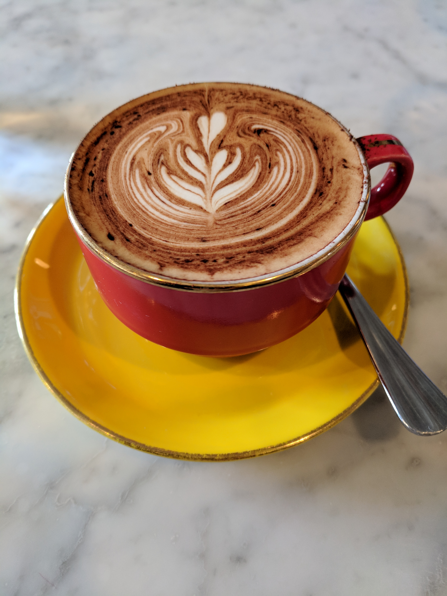

Paris is one of the most breathtaking cities in Europe. The City of Lights is home to vibrant life, extravagant museums, and centuries of history. Food and wine are a significant part of the area's reputation.
Read moreAround every corner or bend in the Seine are beautifully photogenic views begging to be captured and framed, from Montmarte, to the Latin Quarter, and beyond.
One of most important things when it comes to traveling in Paris is packing accordingly. Here are a few tips:
Paris is full of wonderful places to enjoy fine cuisine. Find a seat in a traditional cafe, or relax like a queen at a five star restaurant. Here are our top tips to eat like the locals:
